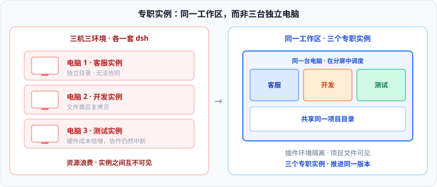
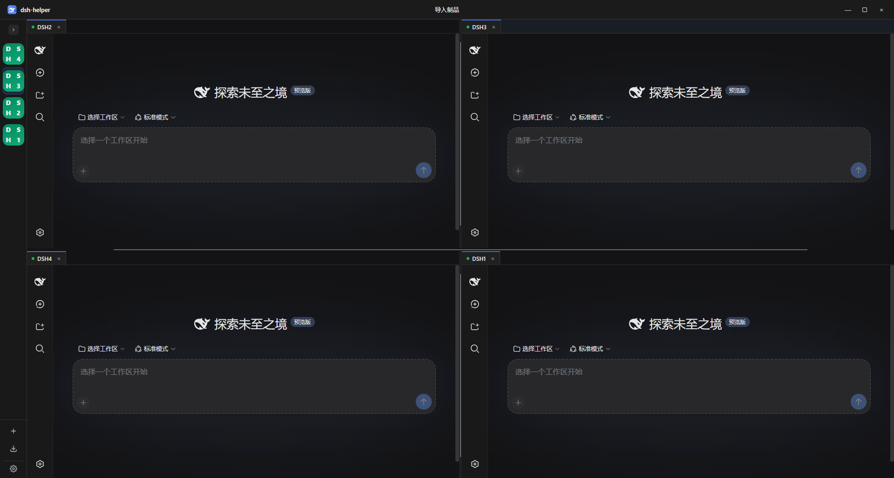
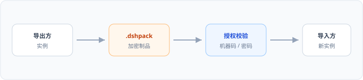
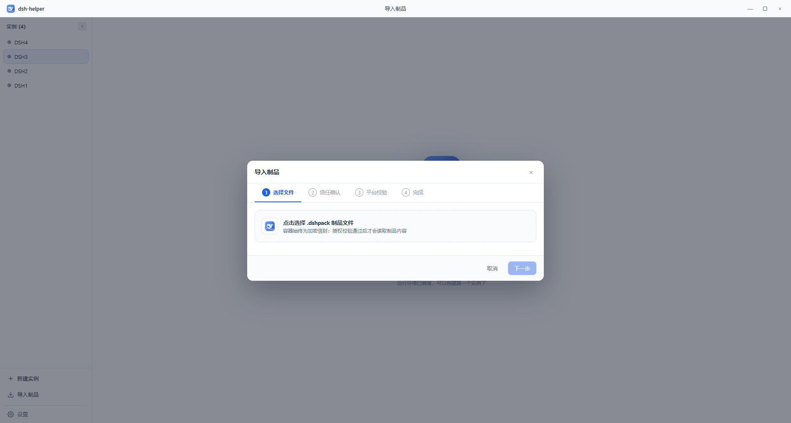

DeepSeek Harness 桌面端
DeepSeek Harness 桌面端
一台电脑，
并行无限实例
客服、开发与测试无法并存于同一套 dsh。 每个实例都是完整独立的 Harness——同一工作区并行，实例就绪后即可封装交付。
Windows · macOS · Linux · GitHub Releases

- 客服
- 开发
- 测试
- 调度
- 编码
- 文档
- 测试
- 评审
- 前端
- 后端
- 测试
- 封装
插件环境隔离 · 同一工作区协同 · 配置完成后即可封装
01 隔离
单一实例无法承载多套业务
不相关的插件进入同一预设，模型会调用错误工具。先隔离工作负载，再谈协同与交付。
问题
客户消息、代码与测试共享一份 DSH_HOME。
工具列表过长，模型开始误判。
三套能力无法并存于一份预设。
Agent 预设无法解决：每次会话仅能挂载一套，切换后会被锁定。
依据 DeepSeek Harness： Agent Presets and Personas
方案
每个实例即一套完整独立的 dsh——独立进程、端口与
DSH_HOME。按需创建，插件环境互不冲突。隔离之后，才能并行，才能封装。
02 协同
专职实例，同一工作区
插件集彼此隔离，项目文件始终可见。你在分屏中调度，配置完成的实例即可封装。
每一个实例各司其职：客服、开发、测试。插件是其工具链，因此必须隔离。
分散到三台电脑等于三处独立环境——硬件成本倍增，文件反复拷贝，全局状态不可见。 将它们置于同一台电脑、同一项目目录。 不是三个无关窗口，而是同一工作区推进同一版本。


03 变现
实例就绪，导出为包
交付的是可运行的专职实例——经过隔离与同区协同，而不是又一周远程部署。
将客服、开发与测试配置完成后，若需对外交付，瓶颈往往不是「会不会用」，而是 每次交付都像重新完成一遍工程。
- 无法复现 数日后连自己都难以确认哪些插件与哪份预设构成「这一套」。
- 难以交付 说明书无法保证完整安装；直接打包目录又存在二次分发风险。
- 难以规模化 下一个客户仍需重复远程配置，交付周期远长于调校本身。
.dshpack 将调校完成的实例封装为文件。导入即可运行；可绑定机器码或密码，可禁止再导出。配置几个实例，就导出几个包。

